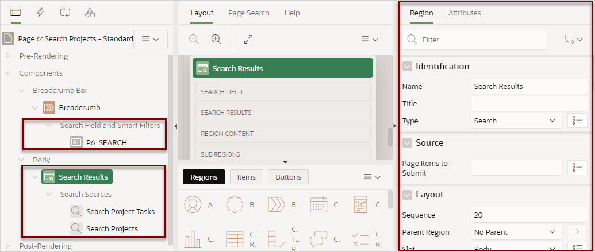

16.9.2 About Creating Application Searches
Create a declarative search for an application by creating a search configuration on a data source and then creating a page that displays the search results.
Adding search to an application involves two basic steps:
-
Create a search configuration in Shared Components.
A search configuration contains information about searchable data source. Supported search types include:
-
Standard - Defines a searchable data source such as a table, SQL Query, or REST Data Source. Searches is executed by a SQL Query using
LIKEexpressions. -
Oracle TEXT - Define a searchable table or SQL Query which already has an Oracle TEXT index created. Search is executed by using Oracle TEXT functionality, which provides linguistic and fuzzy search capabilities.
-
Oracle Ubiquitous Search - Search using an Oracle ubiquitous search index (requires Oracle Database 23ai or later). The index must be located in the parsing schema of the application.
-
List - Search within a selected List from Shared Components.
-
-
Create a Search page.
You can create a search page by running the Create Page Wizard and selecting Search Page, or by adding search components manually. A Search page features a search field (or page item) which enables users to submit search terms and a Search Results region. The Search Results region contains Search Sources which map to search configurations.
The following example shows a search page in Page Designer. In the Rendering tab, notice the page item, P6_SEARCH and the Search Results region. P6_SEARCH is the search field which enables users to submit search terms. The Search Results region contains both the search results and two Search Sources which map to search configurations maintained in Shared Components. You can further refine and control the search display and behavior by editing attributes in the Property Editor.

Description of the illustration search_page_pd.png
Parent topic: Adding Search to an Application